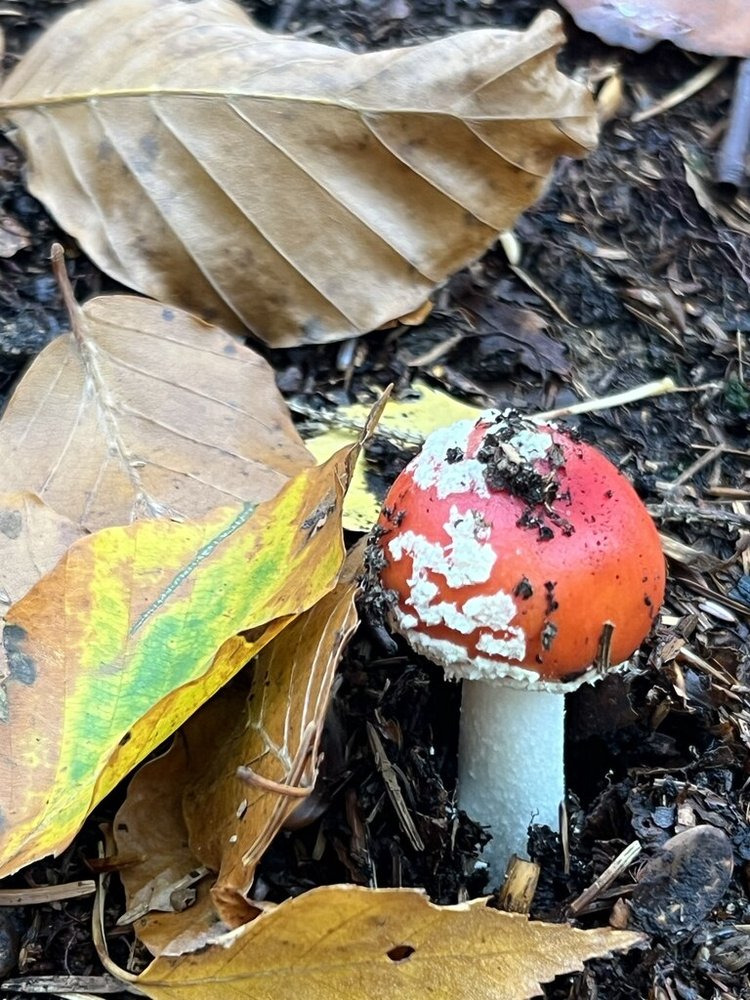

Hypothetical records
The UCI data describes hypothetical samples drawn from a field guide covering 23 species. It is not a catalogue of mushrooms found in Switzerland or elsewhere.
Machine learning demo · No sign-up
Describe six traits and compare them with 8,124 field-guide records. The model runs entirely in your browser; no image or description is uploaded.

Six categorical features
Select the closest option for each trait. Unknown traits cannot be entered; that is one of the demo’s limitations.
Read before using the demo
The UCI data describes hypothetical samples drawn from a field guide covering 23 species. It is not a catalogue of mushrooms found in Switzerland or elsewhere.
The model ignores cap shape, colour, texture, season, geography and other clues. Two different mushrooms can produce the same six selections.
In the held-out test split, three poisonous records were classified as edible. A high test score does not remove that risk.
This page does not analyse a photograph or identify a species. It only compares the selected categories with patterns in the training data.
If food safety is the real question, the safe action is simple: do not eat the mushroom and ask a qualified inspector.
Reproducible baseline
100 trees, maximum depth 10, one-hot encoding and a stratified 70/30 split with random state 0.
| Actual class | Predicted edible | Predicted poisonous |
|---|---|---|
| Edible | — | — |
| Poisonous | — | — |
The displayed score averages the tree-level class estimates. It is not a calibrated probability that a real mushroom is poisonous.
Sources and attribution
Mushroom dataset, UCI Machine Learning Repository, 1987. 8,124 rows and 22 categorical features; this demo uses six. Licensed under CC BY 4.0. DOI: 10.24432/C5959T.
RandomForestClassifier from scikit-learn. Training happens offline in train_model.py; the browser evaluates the exported trees without a Python runtime.
Young Amanita muscaria (fly agaric) by Jay Pea, via Wikimedia Commons. Licensed under CC BY-SA 2.0. The original image is included unchanged.
VAPKO, the Swiss association for official mushroom inspection. Use its inspection information rather than relying on an app for food-safety decisions.